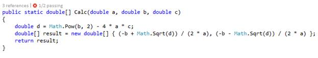
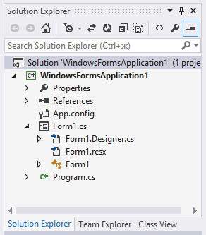
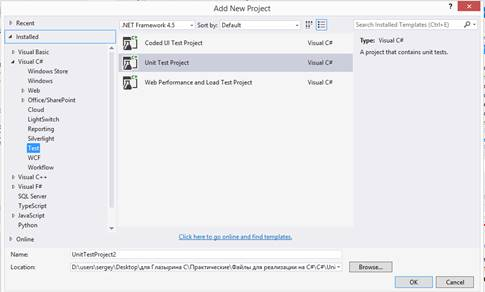
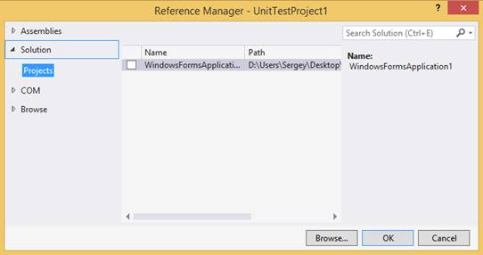
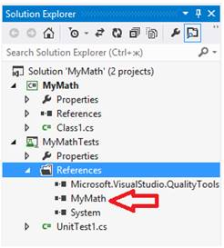
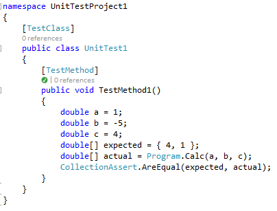
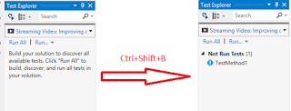
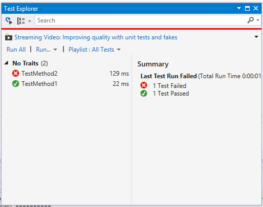
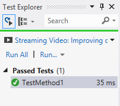
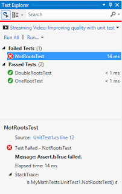

Создание модульных тестов в MS Visual Studio
Цель: приобретение практических навыков модульного тестирования программ средствами Visual Studio.
Модульное тестирование, или юнит-тестирование (англ. unit testing) — процесс в программировании, позволяющий проверить на корректность отдельные модули исходного кода программы.
Модульный тест — это автоматизированный фрагмент кода, который вызывает тестируемый метод или класс, а затем проверяет несколько предположений относительно логического поведения метода или класса Джефф Левинсон).
Подключение тестового решения
При модульном тестировании первым шагом выбирается метод, который будет тестироваться.
В качестве примера разберем метод нахождения корней квадратного уравнения.

Далее необходимо добавить «Unit-test project» в Решение приложения. Для этого необходимо нажать правой клавишей на Решении (solution) в Обозревателе решений.

Из выпадающего меню выбрать пункт «Add» (добавить), добавляем новый проект (newproject), и в открывшемся окне выбираем Unit TestProject.

Далее в браузере решений (SolutionExplorer), в разделе тестов, необходимо в разделе References (ссылки) выбрать добавление нового решения. После чего откроется менеджер решений.

В разделе Решения (Solution) выбираем пункт Проекты (Project). Далее устанавливаем галочку напротив нужного решения и нажимаем «ОК». В обозревателе решений, появится ссылка на проект в разделе Ссылки (References).

Задание 1:
Самостоятельно откройте тестовое
приложение соответствующее вашему варианту с помощью Visual Studio и добавьте в проект модульный тест. Вариант задания выбирается по последним двум цифрам в студенческом билете. Тестовое приложение находится в папке "Programms".
Создание модульного теста
Следующим шагом будет создание модульного теста. Для редактирования тестового класса, открываем класс UnitTest1.cs. В начале необходимо указать директиву с названием пространства имен класса, который подвергается тестированию. Название пространства имен указывается после слова namespace в тестируемом классе.
Далее изменяем тестовый метод TestMethod1(), который создается автоматически. Для этого напишем следующий код в тело метода.

Сперва указываются переменные, которые будут передаваться в метод в качестве аргументов.
Далее создается коллекция значений expected, эти значения задаются проверяющим, и они известны до начала тестирования.
После чего создается коллекция полученных результатов actual, которая получает значения из проверяемого метода.
Далее с помощью класса CollectionAssert сравниваются коллекции объектов.
Если возникает ошибка защищенности метода или класса, то стоит сделать метод и/или класс публичным
Задание 2:
Для тестового приложения выделите метод, который необходимо протестировать на основе спецификации, а также напишите для него положительный модульный тест по аналогии с примером.
Работа с Обозревателем тестов
Для того чтобы работать с модульными тестами, нам понадобиться открыть окно Test Exlorer-а: Test -> Windows -> Test Explorer. Если в нем нет написанных тестов, то необходимо собрать решение.

В Test Explorer можно запускать различные группы тестов:
- Все тесты.
- Только не прошедшие.
- Не запускавшиеся.
- Только прошедшие.
Из контекстного меню на тесте, можно запустить конкретный тест, перейти к его описанию, провести отладку или получить анализ выполнения. Также имеется возможность запускать тесты принудительно, после выполнения каждого нового построения решения.

Включаем эту опцию и перестраиваем наше решение:

Выполнение тестов происходит в отдельном потоке, что позволяет производить параллельное тестирование программы с помощью ручного тестирования.
Задание 3:
Проверьте созданный метод с помощью Обозревателя тестов
Создание набора тестов
На данном этапе у нас имеется один тест, который проверяет один тестовый набор. Для проверки нескольких тестовых наборов необходимо создать новые методы, проверяющие оставшиеся тестовые наборы.
Для приведенного примера имеет смысл проверить несколько вариантов с различными выходными параметрами:
первыйтестовый случай, когда у нас нет корней:
[TestMethod]
public void NotRootsTest()
{
double a = 1;
double b = 4;
double c = 5;
double[] actual =SqrtRoots.Calc(a, b, c);
Assert.IsNotNull(actual);
Assert.IsTrue(actual.GetLength(0) == 0);
}
второй, 2 одинаковых корня:
[TestMethod]
public voidOneRootTest()
{
double a = 1;
double b = -4;
double c = 4;
double[] expected = { 2 };
double[] actual =SqrtRoots.Calc(a, b, c);
CollectionAssert.AreEqual(expected, actual);
}
третий, 2 различных корня:
[TestMethod]
public void DoubleRootsTest()
{
double a = 1;
double b = -5;
double c = 4;
double[] expected = { 4, 1 };
double[] actual = SqrtRoots.Calc(a, b, c);
CollectionAssert.AreEqual(expected,actual);
}
Для упрощения создания новых тестовых методов, можно скопировать первый тестовый метод, но обязательно необходимо изменить его имя, а также перед объявлением метода указать принадлежность метода к тестовым методам, дописав перед ним [TestMethod].А также изменить входные параметры.
После того, как все тесты созданы, имеет смысл запустить их на проверку.
По окончании тестирования все тесты будут разделены на пройденные и не пройденные, и подсвечены соответствующим цветом. При нажатии на не пройденный тест можно увидеть сообщение об ошибке, из-за которой тестирование завершилось неудачей.

Задание 4:
Создайте остальные модульные тесты исходя из данных полученных в лабораторной «Функциональное тестирование» и проведите тестирование с помощью Обозревателя тестов.
Контрольное задание
Самостоятельно на основе приведенного примера, реализуйте набор Unit-тестов для метода из тестируемого приложения, соответствующего вашему варианту. Вариант задания выбирается по последним двум цифрам в студенческом билете. В качестве тестовых вариантов используйте материалы подготовленные в лабораторной «Функциональное тестирование».